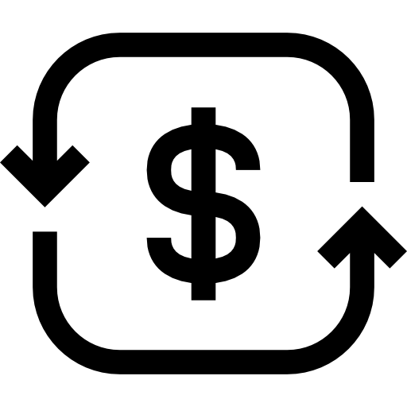

경제 뉴스 브리핑 — 2026년 04월 19일 (일)| 종목 | 가격 | 변동 |
|---|---|---|
| 🟢 S&P 500 | 7,126.06 | ▲ 1.20% |
| 🟢 나스닥 | 24,468.48 | ▲ 1.52% |
| 🟢 반도체 ETF | 415.71 | ▲ 2.40% |
| 🟢 엔비디아 | 201.68 | ▲ 1.68% |
| 🟢 COMEX 금 | 4,879.60 | ▲ 0.00% |
| 🔴 달러/원 환율 | 1,466.00 | ▼ 0.81% |
| 🟢 WTI 원유 | 82.59 | ▲ 0.00% |
"공운위 보수분과위 추진"에도 노동계 '시큰둥'?
정태호 의원의 공공기관운영법 개정안은 재정경제위원회에서 단 한 차례 논의된 상태이며, 노동계는 이에 대한 반응이 미온적이다. 여야는 한국은행 총재 후보자 인사청문 경과보고서 채택을 놓고 갈등을 겪고 있다.
"KB자산운용, 액티브 ETF로 '제2의 성장동력' 찾는다"
KB자산운용은 주식운용본부 산하에 '액티브 ETF운용실'을 신설할 계획이다. 이는 기존 ETF운용본부와는 별도의 조직으로, 국내 주식형 액티브 ETF 운용을 전담하게 된다.
"SK하이닉스도 삼성전자처럼 '깜짝 실적'?"
KB증권은 SK하이닉스가 연간 250조원의 이익을 낼 것으로 전망하며, 환율이 현재 수준을 유지할 경우 글로벌 빅테크 4위에 올라설 가능성이 있다고 분석했다.
"밀가루·설탕 값 내리면 뭐하나…중동發 유가·환율 폭격에 가공식품 가격 상승"
식품사들이 원자재 가격을 내렸음에도 불구하고 중동 전쟁으로 인해 유가와 환율이 상승하며 가공식품 가격에 부담을 주고 있다. 원/달러 환율이 1500원을 돌파하면서 수입 원재료의 가격 상승이 우려된다.
"장하준 “세계경제질서, 구조적 재편 진행중…자유무역 시대 끝나가”"
장하준 교수는 세계 경제가 구조적으로 재편되고 있으며, 자유무역 시대가 종말을 맞이하고 있다고 주장했다. 그는 환율 과대평가가 수출 경쟁력을 약화시킨다고 경고했다.
"Here’s what the stock market might have gotten wrong about the Iran war"
이란 전쟁과 관련하여 주식 시장은 공급망의 혼잡과 인프라 손상 등 현실을 간과하고 있는 것으로 보인다. 이는 시장의 불확실성을 더욱 부각시키고 있다.
"Mayor Wilson responds to pitch of building large data centers in Seattle"
시애틀 시장은 대규모 데이터 센터 건설에 대한 제안에 대해 아직 승인하지 않았으며, 잠재적인 모라토리엄을 검토할 것이라고 밝혔다. 이는 지역 경제와 환경에 미치는 영향을 고려한 결정으로 해석된다.
"Trump, When Asked About White House Meeting with Anthropic’s Dario Amodei: ‘Who?’"
트럼프 전 대통령은 Anthropic의 Dario Amodei와의 백악관 회의에 대해 무관심한 반응을 보였다. 이는 현재 정치적 상황에서 기업과 정부 간의 관계가 복잡해지고 있음을 시사한다.